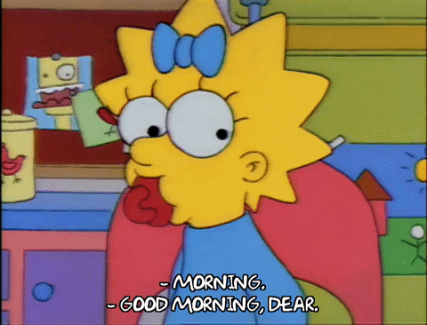

| Página | Contenido |
|---|---|
| Home | Mapa del sitio |
|
|
|
| Bart | El primogénito (10 años) |
|
|
|
| Lisa | La mediana (8 años) |
|
|
|
| Maggie | La bebé (1 año) |
|  | |
| Autoría: Ignacio Castillo Franco | |
Este personaje fue creado improvisadamente por Matt Groening y debutó en el corto Good Night de El show de Tracey Ullman el 19 de abril de 1987, originalmente, con la voz de Nancy Cartwright. En Hispanoamérica, Bart ha sido siempre doblado por Marina Huerta.
Bart es uno de los personajes principales de la serie y ha resultado ser uno de los más conocidos en la historia de la animación en la televisión estadounidense. La revista Time consideró a Bart como el cuadragésimo sexto personaje (de cien) más influyente del siglo xx; la revista norteamericana TV Guide le otorgó el undécimo lugar (junto a Lisa) en la lista de los «50 mejores personajes de dibujos animados de todos los tiempos» y el Entertainment Weekly nombró a Bart el «artista del año» en 1990. Cartwright ha recibido varios premios por dar su voz a Bart, incluyendo el premio Emmy por la voz de doblaje más destacada en horario de máxima audiencia en 1992 y el premio Annie por su «interpretación en el campo de la animación» en 1995.
Es probablemente el personaje más complejo y que más ha cambiado en la serie. Inicialmente, Lisa perpetuaba el papel que había desempeñado en los cortos del Tracey Ullman Show: era una "versión femenina de Bart" y era igual de traviesa. En las primeras temporadas Lisa tenía intereses tan infantiles como los de Bart, tales como cómics, hacer travesuras y actividades más orientadas a niñas como jugar con su muñeca Stacy Malibu, pero también empezaron a esbozar su personalidad sensible e inteligente con episodios como Moaning Lisa o Krusty Gets Busted.Enseguida, su inteligencia y sensibilidad se entremezclaron con sus intereses pueriles, y Lisa ha ido desarrollando cierta consciencia ecológica, una mentalidad feminista y una ideología basada en éticas orientales.
Nancy Cartwright originalmente audicionó para realizar la voz de Lisa, pero pronto le dijeron que su voz sería más adecuada para Bart. Yeardley Smith se había presentado en la audición inicialmente para grabar la voz de Bart, pero la directora del casting creyó que su voz era muy aguda, por lo que le dio el papel de Lisa. Sin embargo, para interpretar la voz, Smith sube un poco el tono de la suya.
Maggie es el personaje que probablemente menos ha evolucionado dentro de la familia protagonista, debido a su naturaleza muda y marginal. Su avanzada inteligencia se esboza temprano en la primera temporada, pudiendo deletrear fórmulas matemáticas complicadas, y sigue desarrollándose de manera frustrada en las últimas temporadas.
Con contadas excepciones, Maggie nunca habla pero suele participar en los eventos que acontecen alrededor de ella, con gestos sutiles o expresiones faciales. La primera vez que el bebé habló lo hizo en el corto Good Night, el primero emitido en The Tracey Ullman Show, después de que la familia se durmiera. En esta ocasión, Liz George le puso la voz a Maggie